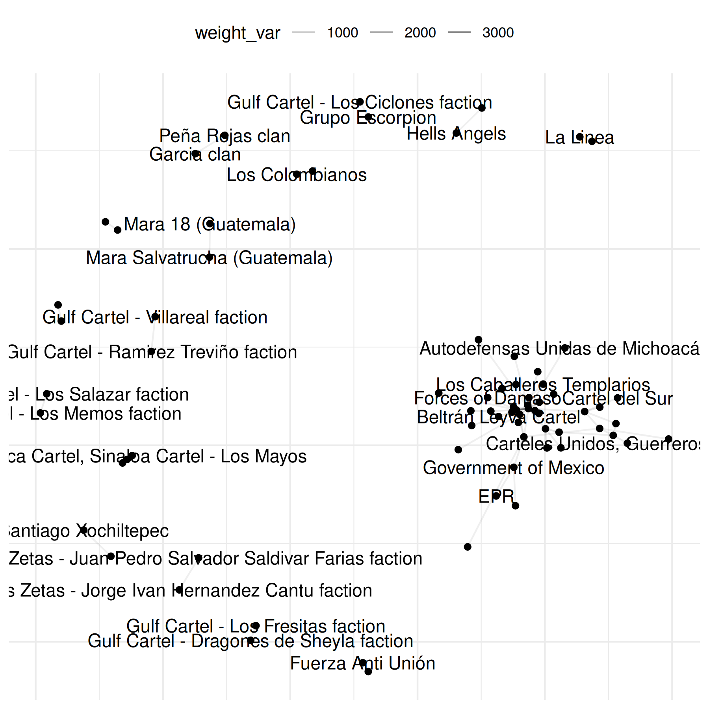
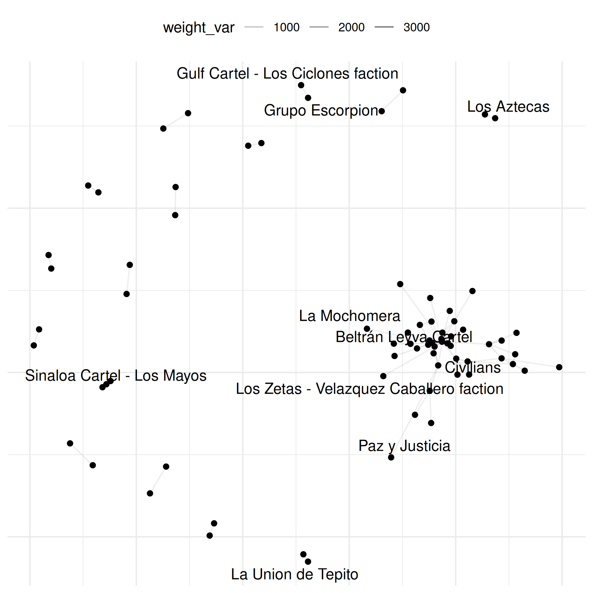
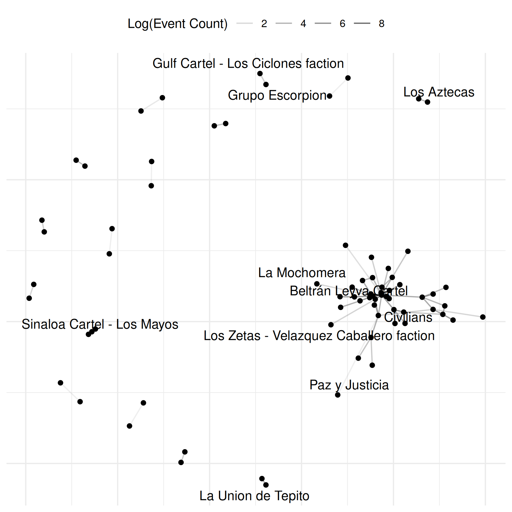

Conflict Application: Event Data
Cassy Dorff and Shahryar Minhas
2025-06-13
Source:vignettes/event_data.Rmd
event_data.RmdVignette Summary
Below is a demonstration of how to use the netify R package to build and analyze various conflict networks. We will walk through data preparation, network construction, summary statistics, visualizations, and special use cases like weighted networks, longitudinal networks, and bipartite networks.
A common data type used to create conflict networks is in the structure of event data, where actors are repeated across rows but there is no specific variable that denotes the ‘edge’ as shown in our previous example.
We show how to use netify and UCDP data as just one
example of potential applications to intrastate event data. The first
step is to go to https://ucdp.uu.se/downloads/ and download the data you
want to use. For this tutorial we have downloaded UCDP GED event data
version 23.1 and subset the data for the case of Mexico. We also have
saved this example internal to the package to that users can easily run
the code below.
- Create: generate an aggregated, weighted network of conflict between actors in Mexico. The default here, when the user does not supply a ‘weight’ value, is for the function to simply count up interactions and return this as the weight. When this is the case, the user will get the warning shown in the example below.
# Load UCDP GED data on Mexico
data(mexico)
# Construct unweighted network (number_of_events by default)
mex_network <- netify(
mexico,
actor1 = 'side_a',
actor2 = 'side_b',
symmetric = TRUE,
sum_dyads = TRUE,
diag_to_NA = TRUE,
missing_to_zero = TRUE
)## ! Warning: there are repeating dyads within time periods in the dataset. When `sum_dyads = TRUE` and `weight` is not supplied, edges in the outputted adjacency matrix represent a count of interactions between actors.
# Summaries at the graph and actor levels
summary(mex_network)## num_actors density num_edges prop_edges_missing mean_edge_weight
## 1 74 0.02520088 138 0 7.018512
## sd_edge_weight median_edge_weight min_edge_weight max_edge_weight competition
## 1 113.395 0 0 3757 0.1371326
## sd_of_actor_means transitivity
## 1 21.37264 0.1046512
actor_stats <- summary_actor(mex_network)
plot_actor_stats(actor_stats)- Explore: next we can quickly use the basic plot function in the
netifypackage to plot network of violent interactions in Mexico.
# select 10 random names for plotting
select_names <- rownames(mex_network)
set.seed(12345)
random_indices <- sample(length(select_names), 10)
random_names <- select_names[random_indices]
plot(mex_network,
add_text = TRUE)## Warning: Removed 69 rows containing missing values or values outside the scale range
## (`geom_segment()`).
plot(mex_network,
select_text = random_names,
select_text_display = random_names)## Warning: Removed 69 rows containing missing values or values outside the scale range
## (`geom_segment()`).## Warning: Removed 64 rows containing missing values or values outside the scale range
## (`geom_text()`).
The graphs above reveals the need to transform the data to increase
interpretability. To do so, we can log the the values of the edges. The
netify plot function has a built-in parameter for this
where the user can pass the function they want to use to transform the
weights of the data (see the general transform_weights
function in the package to transform weights outside of plotting.)
plot(mex_network,
select_text = random_names,
select_text_display = random_names,
# log(x+1) to better see range of connects
weight_transform = log1p
)## Warning: Removed 69 rows containing missing values or values outside the scale range
## (`geom_segment()`).## Warning: Removed 64 rows containing missing values or values outside the scale range
## (`geom_text()`).
Let’s make the same graph as above but this time make sure we remove
any isolates from the graph as well as refine the edges. In addition,
there are some points that are overlapping and difficult to see. To get
ideas about how to improve the plot, we might like to inspect each
component of the plot. This is an option when the plot parameter,
return_components = TRUE. We can also directly modify these
components, as shown below by adding a label specification.
# investigate each component of the plot
comp <- plot(
mex_network,
remove_isolates = TRUE,
select_text = random_names,
select_text_display = random_names,
weight_transform = log1p,
return_components = TRUE
)
print(comp)## Netify plot components:
## Base plot: ggplot object
## Edges: geom_segment/geom_curve layer
## Points: geom_point layer
## Text: geom_text layer
## Theme: theme_netify
##
## Use assemble_netify_plot() to build or construct manually with netify_edge(), netify_node(), etc.
# modify component
comp$base +
netify_edge(comp) +
labs(alpha='Log(Event Count)') +
reset_scales() +
netify_node(comp) +
netify_text(comp) +
comp$theme## Warning: Removed 69 rows containing missing values or values outside the scale range
## (`geom_segment()`).## Warning: Removed 64 rows containing missing values or values outside the scale range
## (`geom_text()`).
There is, however, a more straightforward way to do this which is via
the edge_alpha_label parameter inside the netify plot
function:
# and even simpler
plot(mex_network,
select_text = random_names,
select_text_display = random_names,
weight_transform = log1p,
edge_alpha_label = "Log(Event Count)")## Warning: Removed 69 rows containing missing values or values outside the scale range
## (`geom_segment()`).## Warning: Removed 64 rows containing missing values or values outside the scale range
## (`geom_text()`).
For conflict data, we often like to see which actors are involved in
the most conflict. To do this, however, we’d need to calculate degree
centrality. To do this we can use the add_node_vars()
function (there is also a add_dyad_vars() function) which
takes a netlet object (the network of study), nodal data, and a string
to specify the column name in the nodal data that matches with each
actor in the network. Below, we use summary_actor() to
create the nodal data frame.
# add degree centrality
mex_network = add_node_vars(
mex_network,
summary_actor(mex_network),
actor='actor' )
plot(mex_network,
weight_transform = log1p,
edge_alpha_label = "Log(Event Count)",
point_size_var='degree',
point_size_label='Degree',
point_alpha=.5,
check_overlap=TRUE
)## Warning: Removed 69 rows containing missing values or values outside the scale range
## (`geom_segment()`).